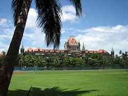
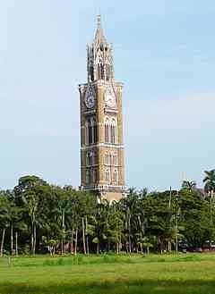
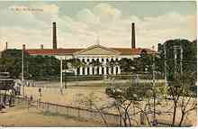
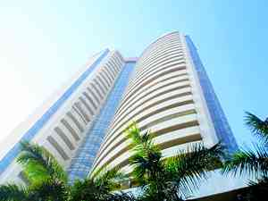

|
|
British administrative offices

Bombay High Court
Bombay High Court, Maharashtra, is one of the oldest High Courts of India with jurisdiction over the states of Maharashtra and Goa, and, the Union Territories of Daman and Diu and Dadra and Nagar Haveli. The High Court has regional branches at Nagpur and Aurangabad in Maharashtra and Panaji, Goa. The court is one of the most distinguished high courts in the country. The first Chief Justice, the Attorney General and Solicitor General of Independent India were from this court. Since India's Independence, 22 judges from this court have been elevated to the Supreme Court and 8 of them have been Chief Justice of India. The court has Original Jurisdiction in addition to its Appellate. The decisions of this court can be appealed only to the Supreme Court of India. The Bombay High Court has the sanctioned strength of 75 judges.

Rajabai Clock Tower
The Rajabai Clock Tower was designed by Sir George Gilbert Scott, an English architect. He modeled it on the clock tower of the Palace of Westminster in London. The foundation stone was laid on 1 March 1869 and construction was completed in November 1878. The total cost of construction came to INR 200,000, a princely sum in those days. This entire cost was defrayed by Premchand Roychand, a prosperous broker who founded the Bombay Stock Exchange on the condition that the tower be named after his mother Rajabai. Premchand Roychand's mother was blind and as a staunch follower of Jain religion she was supposed to consume her dinner before evening. The evening bell of the tower helped her to know the time without anyone's help. The tower was closed to the public after it became a frequent spot for those attempting to commit suicide.

India Government Mint
The India Government Mint, Mumbai is one of the four mints in India and is situated in the city of Mumbai . The Mint was established in 1829 by the then governor of the Bombay Presidency. The main activity of the mint is in the production of commemorative and development-oriented coins. The mint is situated just opposite the Reserve Bank of India in the Fort area of South Mumbai. Initially governed by the Governor of the Bombay Presidency, it was transferred to the Government of India on 18 May 1876 through a Finance Department Resolution 247. In 1918, a branch of the Royal Mint of London was set up to issue British sovereigns. In April 1919, after manufacturing 12.95 lakh (1.295 million) coins, it was shut down.
Besides coins, the Mint also produces medals of various types, for Ministry of Defence, Ministry of Home Affairs, educational institutions, social service institutions, badges etc. It is also a centre for the issuance of gold ingots in exchange of unrefined gold tendered by licensed dealers. The institution also has a separate department that makes official weights and measures such as metric weights, capacity, and linear measures for state governments, laboratories and the Bureau of Indian Standards.

Bombay Stock Exchange
Established in 1875, BSE Ltd. (formerly known as Bombay Stock Exchange Ltd. and established as "The Native Share and Stock Brokers' Association") is one of Asia’s fastest stock exchanges, with a speed of 200 microseconds and one of India’s leading exchange groups. BSE is a corporatized and demutualised entity, with a broad shareholder-base that includes two leading global exchanges, Deutsche Bourse and Singapore Exchange, as strategic partners. BSE provides an efficient and transparent market for trading in equity, debt instruments, derivatives, and mutual funds. It also has a platform for trading in equities of small-and-medium enterprises (SME). Over the past 139 years, BSE has facilitated the growth of the Indian corporate sector by providing an efficient capital-raising platform.
go to top
Home
Developed by SUGATO CHAKRABORTY (currently pursuing B.Tech in CSE from West Bengal University of Technology, developer at Boscom Software,2014)
|
|